소방설비산업기사(전기) (2011-10-02 기출문제)
1과목: 소방원론
1. 물이 소화약제로서 널리 사용되고 있는 이유에 대한 설명으로 가장 거리가 먼 것은?
- 쉽게 구할 수 있다.
- 비열이 크다.
- 증발잠열이 크다.
- 점도가 크다.
(정답률: 82%)

2. 청정소화약제 설비에 사용하는 소화약제 중 성분비가 다음과 같은 비율로 구성된 소화약제는?
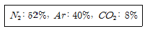
- FC-3-1-10
- HCFC BLEND A
- HFC+-227ea
- IG-541
(정답률: 65%)
3. 건물화재에서의 사망원인 중 가장 큰 비중을 차지하는 것은?
- 연소가스에 의한 질식
- 화상
- 열충격
- 기계적 상해
(정답률: 95%)
4. B급 화재는 다음 중 어떤 화재를 의미하는가?
- 급속 화재
- .일반 화재
- 전기 화재
- 유류 화재
(정답률: 91%)
5. 재4류 위험물의 특수인화물에 해당되는 것은?
- 휘발유
- 나트륨
- 디에틸에테르
- 과산화수소
(정답률: 76%)
6. 건물내부에서 화재가 발생하여 실내온도가 27℃에서 1227℃로 상승한다면 이 온도상승으로 인하여 실내 공기는 처음의 몇 배로 팽창하겠는가? (단, 화재에 의한 압력변화 등 기타 주어지지 않는 조건은 무시한다.)
- 3배
- 5배
- 7배
- 9배
(정답률: 70%)
7. 건축물의 화재시 피난에 대한 설명으로 옳지 않은 것은?
- 피난동선은 가급적 단순한 형태가 좋다.
- 정전시에도 피난 방행을 알 수 있는 표시를 한다.
- 피난동선이라 함은 엘리베이터로 피난을 하기 위한 경로를 말한다.
- 2 방향의 피난통로를 확보한다.
(정답률: 93%)
8. 할로겐족 원소로만 나열된 것은?
- F, B, Cl, Si
- F, Br, Cl, I
- Si, Br, I, Al
- He, N, F, Br
(정답률: 75%)
9. 산소와 화합하지 않는 원소는?
- Fe
- Ar
- Cu
- P
(정답률: 68%)
10. 화재 현장에서 연기가 사람에 미치는 영향으로 가장 거리가 먼 것은?
- 패닉현상
- 시각적 장애
- 만발효과
- 질식현상
(정답률: 90%)
11. 연소반응이 일어나는 필요한 조건에 대한 설명으로 가장 거리가 먼 것은?
- 산화되기 쉬운 물질
- 충분한 산소 공급
- 비휘발성인 액체
- 연소반응을 위한 충분한 온도
(정답률: 91%)
12. 소화약제로 사용하는 CO2에 대한 설명으로 옳은 것은?
- 상온, 상압에서 무색, 무취의 기체 상태이다.
- 화염과 접촉하여 유독물질을 쉽게 생성시킨다.
- 부촉매 효과가 가장 주된 소화작용이다.
- 전기전도성 물질이지만 소화효과는 좋다.
(정답률: 75%)
13. 다음 중 분진폭발의 발생 위험성이 가장 낮은 물질은?
- 석탄가루
- 밀가루
- 시멘트
- 금속분류
(정답률: 87%)
14. 연소의 진행에 따른 연소생성열 전달의 대표적 3가지 방식이 아닌 것은?
- 열전도
- 열확산
- 열복사
- 열대류
(정답률: 81%)
15. 100℃를 기준으로 액체상태의 물이 기화할 경우 체적이 약 1700배 정도 늘어난다. 이러한 체적팽창으로 인하여 기대할 수 있는 가장 큰 소화효과는?
- 촉매효과
- 질식효과
- 제거효과
- 억제효과
(정답률: 82%)
16. Halon 1301의 화학식으로 옳은 것은?
- CF3Br
- CH3Br
- CH3I
- CF3I
(정답률: 86%)
17. 불연성 기체나 고체 등으로 연소물을 감싸서 산소 공급을 차단하는 소화의 원리는?
- 냉각소화
- 제거소화
- 희석소화
- 질식소화
(정답률: 88%)
18. 20℃의 물 400g을 사용하여 화재를 소화하였다. 물 400g이 모두 100℃로 기화하였다면 물이 흡수한 열량은 얼마인가? (단, 물의 비열은 1cal/gㆍ℃이고, 증발잠열은 539cal/g이다.)
- 215.6kcal
- 223.6kcal
- 247.6kcal
- 255.6kcal
(정답률: 63%)
19. 질산에 대한 설명으로 틀린 것은?
- 부식성이 있다.
- 불연성 물질이다.
- 산화제이다.
- 산화되기 쉬운 물질이다.
(정답률: 60%)
20. 촛불의 연소형태와 가장 관련이 있는 것은?
- 증발연소
- 분해연소
- 표면연소
- 자기연소
(정답률: 82%)
2과목: 소방전기회로
21. 시퀀스제어의 문자기호와 용어가 옳지 않은 것은?
- ZCT-영상변류기
- CB-차단기
- PF-역률계
- THC-열동계전기
(정답률: 66%)
22. 그림과 같은 회로에서 전전류 I는 몇 [A] 인가?
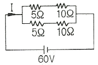
- 4A
- 8A
- 12A
- 25A
(정답률: 75%)
23. 전압계의 측정범위를 5배로 하려면 배율기 저항은 전압계 내부저항의 몇 배로 하면 되는가?
- 4
- 6
- 8
- 10
(정답률: 64%)
24. 회전운동계의 각속도를 전기적인 요소로 변환하면?
- 정전용량
- 컨덕턴스
- 전류
- 인덕턴스
(정답률: 57%)
25. 자기차폐와 가장 관계가 깊은 것은?
- 상자성체
- 반자성체
- 강자성체
- 비투자율이 1인 자성체
(정답률: 63%)
26. 다음 심벌의 명칭은?
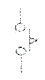
- 수동접점
- 수동조작 자동복귀 접점
- 계전기 접점
- 한시동작 접점
(정답률: 68%)
27. 브리지 정류회로에서 다이오드 1개가 개방되었을 때 출력전압은?
- 입력전압의 1/4크기이다.
- 입력전압의 3/4크기이다.
- 반파 정류 전압이다.
- 출력전압은 0이다.
(정답률: 76%)
28. 부하의 전압과 전류를 측정할 때 전압계와 전류계를 부하와 연결하는 방법으로 옳게 나타낸 것은?
- 전압계는 병렬연결, 전류계는 직렬연결 한다.
- 전압계는 직렬연결, 전류계는 병렬연결 한다.
- 전압계와 전류계는 모두 직렬 연결한다.
- 전압계와 전류계는 모두 병렬 연결한다.
(정답률: 83%)
29. 그림과 같은 파형의 파고율은 얼마인가?
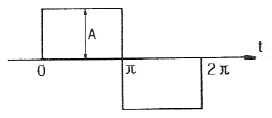
- 0.536
- 1.0
- 1.414
- 1.732
(정답률: 51%)
30. 어떤 회로에
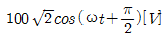
의 전압을 인가하였더니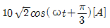
의 전류가 흘렀다면 이 회로에서 소비되는 전력은 몇 [W]인가?- 500
- 866
- 1000
- 1732
(정답률: 55%)
31. 계기용 변류기에 대한 설명을 옳은 것은?
- 1차 권선은 선로에 병렬로 접속한다.
- 2차 표준전류는 일반적으로 5A 이다.
- 1차와 2차의 권수비는 항상 12 이다.
- 2차 표준전압은 일반적으로 110V 이다.
(정답률: 67%)
32. 정격 주파수가 50Hz인 전기기기를 60Hz에 사용할 경우의 현상으로 옳은 것은?
- 철손과 동손 모두 증가
- 철손과 동손 모두 감소
- 철손은 감소, 동손은 증가
- 철손은 증가, 동손은 감소
(정답률: 60%)
33. 바이메탈을 이용한 전기다리미는 어느 제어에 속하는가?
- 비례제어
- 피드백제어
- 프로그램제어
- 추종제어
(정답률: 47%)
34. 25mH와 75mH의 두 인덕턴스가 병렬로 연결되어 있다. 합성 인덕턴스의 값은 몇 [mH] 인가? (단, 상호 인덕턴스는 없는 것으로 한다.)
- 12.25mH
- 18.75mH
- 20.25mH
- 25.75mH
(정답률: 69%)
35. 어떤 제어계의 임펄스 응답이 coswt일 때 계의 전달 함수는?
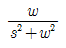
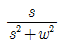
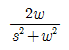
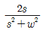
(정답률: 53%)
36. 공진회로의 Q가 갖는 물리적 의미로서 관련이 없는 것은?
- 공진회로 곡선의 첨예도
- 공진회로의 저항에 대한 리액턴스의 비
- 공진시의 전압 확대비
- 공진회로의 에너지 소비 능률
(정답률: 50%)
37. 정격 600W 전열기에 정격전압의 80%를 인가하면 전력은 몇 [W] 인가?
- 384W
- 486W
- 545W
- 614W
(정답률: 58%)
38. 그림에서 c, d 점 사이의 전위차[V]는?
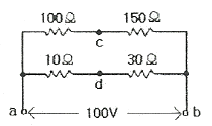
- 6.25V
- 15V
- 25V
- 50V
(정답률: 65%)
39. 3상 유도전동기의 1차 권선의 결선을 △결선에서 Y결선으로 바꾸면 기동토크는 약 몇 [%]로 되는가?
- 25[%]
- 30[%]
- 33[%]
- 35[%]
(정답률: 77%)
40. 코일의 자기인덕턴스는 어느 것에 따라 변하는가?
- 투자율
- 저항률
- 도전율
- 유전율
(정답률: 49%)
3과목: 소방관계법규
41. 지정수량의 몇 배 이상의 위험물을 취급하는 제조소에는 피로침을 설치하여야 하는가? (단, 제6류 위험물을 취급하는 위험물제조소는 제외)
- 5배
- 10배
- 50배
- 100배
(정답률: 74%)
42. 수용인원 100명이상의 지하역사ㆍ백화점 등에서의 인명구조용 공기호흡기의 비치 기준으로 옳은 것은?
- 층마다 1대 이상
- 층마다 2대 이상
- 층마다 3대 이상
- 층마다 4대 이상
(정답률: 49%)
43. 하자보수를 하여야 하는 소방시설 중 하자보수 보증기간이 3년이 아닌 것은?
- 자동식소화기
- 비상방송설비
- 상수도소화용수설비
- 스프링클러설비
(정답률: 78%)
44. 소화활동설비에 해당하지 않는 것은?
- 제연설비
- 자동화재속보설비
- 무선통신보조설비
- 연소방지설비
(정답률: 53%)
45. 다음 중 소방기본법에서 규정하고 있는 자격은?
- 소방시설관리사
- 소방설비산업기사
- 위험물산업기사
- 소방안전교육사
(정답률: 51%)
46. 지하가 중 터널로서 길이가 몇 [m] 이상이면 옥내소화전설비를 설치하는가?
- 100m
- 500m
- 1000m
- 1500m
(정답률: 59%)
47. 다음 중 구급대원이 될 수 없는 사람은?
- 간호조무사의 자격을 취득한 자
- 응급구조사의 자격을 취득한 자
- 구급업무에 관한 교육을 받은 자
- 구조업무에 관한 특수훈련을 받은 자
(정답률: 49%)
48. 특정소방대상물의 관계인 또는 발주자는 정당한 사유없이 며칠 동안 소방시설공사를 계속하지 아니하는 경우 도급계약을 해지할 수 있는가?
- 60일 이상
- 30일 이상
- 15일 이상
- 10일 이상
(정답률: 72%)
49. 다량의 위험물을 저장ㆍ취급하는 제조소 등으로서 대통령령이 정하는 제조소 등이 있는 동일한 사업소에서 대통령령이 정하는 수량 이상의 위험물을 저장 또는 취급하는 경우 당해 사업소의 관계인은 대통령령이 정하는 바에 따라 당해 사업소에 자체소방대를 설치하여야 한다. 여기서 “대통령령이 정하는 수량”이라 함은 지정수량의 몇 배를 말하는가?
- 1천배
- 2천배
- 3천배
- 5천배
(정답률: 66%)
50. 화재개 발생 할 때 화재조사의 시기는?
- 소화활동 전에 실시한다.
- 소화활동과 동시에 실시한다.
- 소화활동 후 즉시 실시한다.
- 소화활동과 무관하게 적절할 때에 실시한다.
(정답률: 78%)
51. 관계인이 예방규정을 정하여야 하는 옥외저장소는 지정수량의 몇 배 이상의 위험물을 저장하는 것을 말하는가?
- 10배
- 100배
- 150배
- 200배
(정답률: 68%)
52. 소방시설설치유지 및 안전관리에 관한 법률시행령에서 규정하는 특정소방대상물의 분류로 옳지 않은 것은?(오류 신고가 접수된 문제입니다. 반드시 정답과 해설을 확인하시기 바랍니다.)
- 투전기업소 및 카지노업소 - 위락시설
- 박물관 - 문화집회 및 운동시설
- 여객자동차터미널 및 화물터미널 - 운수자동차관련시설
- 발전소 - 업무시설
(정답률: 51%)
53. 건축물 등의 신축ㆍ증축ㆍ개축ㆍ재축 또는 이전의 허가ㆍ협의 및 사용승인의 동의요구는 누구에게 하여야 하는가?
- 관계인
- 행정안전부장관
- 시ㆍ도지사
- 관한 소방본부장 또는 소방서장
(정답률: 50%)
54. 착공신고를 하여야 할 소방설비공사로 틀린 것은?
- 비상방송설비의 증설공사
- 옥내소화전설비의 증설공사
- 연소방지설비의 살수구역 중설공사
- 비상콘센트설비의 전용회로 증설공사
(정답률: 37%)
55. 비상방송설비를 설치하여야 할 특정 소방대상물은?
- 연면적 3500m2 이상인 것
- 지하층을 포함한 층수가 10층 이상인 것
- 지하층의 층수가 2개 층 이상인 것
- 사람이 거주하지 않는 동식물 관련시설인 것
(정답률: 72%)
56. 방열성능검사의 방법과 검사결과에 따른 합격표시 등에 관하여 필요한 사항은?
- 대통령령으로 정한다.
- 행정안전부령으로 정한다.
- 시ㆍ도지사령으로 정한다.
- 소방방재청장령으로 정한다.
(정답률: 43%)
57. 소방활동구역의 출입자로서 대통령령이 정하는 자에 속하지 않는 것은?
- 의사ㆍ간호사 그 밖의 구조 구급업무에 종사하는 자
- 소방활동구역 밖에 있는 소방대상물의 소유자ㆍ관리자 또는 점유자
- 취재인력 등 보도업무에 종사하는 자
- 수사업무에 종사하는 자
(정답률: 75%)
58. 위험물안전관리법령에 의하여 자체소방대에 배치하여야 하는 화학소방자동차의 구분에 속하지 않는 것은?
- 포수용액 방사차
- 고가 사다리차
- 제독차
- 할로겐화합물 방사차
(정답률: 80%)
59. 다음 중 소화기구에 해당되지 않는 것은?
- 수동식 소화기
- 소화약제에 의한 간이소화용구
- 캐비넷형 자동소화기기
- 화재감지기
(정답률: 79%)
60. 다음 중 소방시설 등의 자체점검 중 종합정밀점검을 시행해야 하는 시기를 맞게 설명한 것은? 9단, 소방시설완공검사필증을 발급받은 신축 건축물이 아닌 경우)
- 건축물 사용승인일(건축물관리대장 또는 건축물의 등기부등본에 기재된 날을 말한다)이 속하는 달까지 실시
- 건축물 사용승인일(건축물관리대장 또는 건축물의 등기부등본에 기재된 날을 말한다)이 속하는 달로부터 1개월 이내에 실시
- 건축물 사용승인일(건축물관리대장 또는 건축물의 등기부등본에 기재된 날을 말한다)이 속하는 달로부터 2개월 이내에 실시
- 건축물 사용승인일(건축물관리대장 또는 건축물의 등기부등본에 기재된 날을 말한다)이 속하는 달로부터 3개월 이내에 실시
(정답률: 51%)
4과목: 소방전기시설의 구조 및 원리
61. 지하구의 길이가 500m 인 곳에 자동화재탐지설비를 설치하고자 한다. 최소 경계구역수는?
- 1
- 2
- 3
- 4
(정답률: 55%)
62. 비상콘센트의 플러그접속기는 3상 교류 380V의 것에 있어서 어떤 것을 사용하여야 하는가?
- 3극 플러그접속기
- 접지형3극 플러그접속기
- 4극 플러그접속기
- 접지형4극 플러그접속기
(정답률: 79%)
63. 통로 유도등의 설치기준으로 옳지 않는 것은?
- 복도통로유도등은 구부러진 모퉁이 및 보행거리 20m 마다 설치할 것
- 복도통로유도등은 바닥으로부터 높이 1m이하의 위치에 설치할 것
- 계단통로유도등은 각 층의 경사로 참 또는 계단참마다 설치할 것
- 계단통로유도등은 바닥으로부터 높이 1.5m 이하의 위치에 설치할 것
(정답률: 61%)
64. 다음 중 누전경보기의 수신기 설치장소로 적합한 것은?
- 가연성 가스, 증기 등이 다량으로 체류하는 장소
- 대전류 회로, 고주파 발생회로가 있는 장소
- 습도가 높고 온도변화가 급격한 장소
- 옥내 건조한 장소
(정답률: 82%)
65. 연기가 다량으로 유입할 우려가 있는 장소에 적합하지 않는 감지기는?
- 불꽃감지기
- 열아날로그식감지기
- 보상식스포트형감지기
- 차동식스포트형감지기
(정답률: 59%)
66. 비상방송설비의 음량조정기를 설치하는 경우 음량조정기의 배선은?
- 1선식
- 2선식
- 3선식
- 4선식
(정답률: 80%)
67. 감지기를 설치하지 않아도 되는 실내의 용적 기준은?(관련 규정 개정전 문제로 여기서는 기존 정답인 2번을 누르면 정답 처리됩니다. 자세한 내용은 해설을 참고하세요.)
- 실내의 용적이 10m3 이하인 장소
- 실내의 용적이 20m3 이하인 장소
- 실내의 용적이 30m3 이하인 장소
- 실내의 용적이 40m3 이하인 장소
(정답률: 63%)
68. 다음 소화설비 중에서 교차회로방식 적용설비가 아닌 것은?
- CO2소화설비
- 분말소화설비
- 할로겐화합물소화설비
- 습식스프링클러설비
(정답률: 66%)
69. 누전경보기의 전원은 분전반으로부터 전용회로로 하고 각극에 개폐기 및 과류차단기를 설치하여야 한다. 과전류차단기의 전류는 몇[A] 이하 것으로 하여야 하는가?
- 10A
- 15A
- 20A
- 30A
(정답률: 81%)
70. 비상방송설비는 확성기의 음성입력이 실외에서 얼마인가?
- 1W 이상
- 2W 이상
- 3W 이상
- 4W 이상
(정답률: 87%)
71. 다음 중 자동화재속보설비의 스위치 설치위치는 바닥으로부터 몇 [m] 높이에 설치하여야 하는가?
- 0.5m이상 1.0m이하
- 0.8m이상 1.5m이하
- 1.0m이상 1.8m이하
- 1.2m이상 2.0m이하
(정답률: 87%)
72. 예비전원을 내장하지 아니한 비상조명등의 비상전원에 대한 설명으로 옳지 않은 것은?
- 설치장소는 다른 장소와 개방되어 있어야 한다.
- 실내에 설치한 때에는 그 실내에 비상조명등을 설치한다.
- 상용전원의 전력공급이 중단된 때에는 자동으로 비상전원을 공급받을 수 있도록 한다.
- 점검에 편리하고 재해로 인한 피해를 받을 우려가 없는 곳에 설치한다.
(정답률: 65%)
73. 주소형이 아닌 열전대식 차동식분포형감지기는 하나의 검출부에 접속하는 열전대부를 어느 정도 설치할 수 있는가?
- 15개 이하
- 20개 이하
- 25개 이하
- 30개 이하
(정답률: 64%)
74. 누전경보기의 공칭 동작전류는 몇 [mA]이하로 하여야 하는가?
- 100mA 이하
- 150mA 이하
- 200mA 이하
- 500mA 이하
(정답률: 67%)
75. 비상콘센트설비의 절연내력시험시 전원부와 외함 사이의 정격전압이 150V 이하인 경우 인가하는 실효전압은?
- 150V
- 300V
- 500V
- 1000V
(정답률: 49%)
76. 자동화재탐지설비에서 R형 수신기의 장점이 아닌 것은?
- 선로수가 적고 선로길이를 길게 할 수 있다.
- 증설 또는 이설이 쉽다.
- 화재 발생지구를 선명하게 숫자로 표시 할 수 있다.
- 중계기가 필요 없다.
(정답률: 72%)
77. 무선통신보조설비에서 두 개 이상의 입력신호를 원하는 비율로 조합한 출력이 발생하도록 하는 장치는?
- 분배기
- 분파기
- 혼합기
- 증폭기
(정답률: 74%)
78. 비상방송설비에서 기동장치에 따른 화재신고를 수신한 후 필요한 음량으로 화재발생 상황 및 피난에 유효한 방송이 자동으로 개시될 때가지의 소요시간은?
- 10초 이하
- 15초 이하
- 20초 이하
- 60초 이하
(정답률: 80%)
79. 공기관식 차동식분포형 감지기에서 공기관 상호간의 거리는 몇 [m] 이하가 되도록 하여야 하는가? (단, 주요구조부를 내화구조로 한 소방대상물이다.)
- 3m
- 6m
- 9m
- 10m
(정답률: 57%)
80. 자동화재탐지설비의 감지기회로의 전로저항은 ( ㉮ )이하가 되도록 하여야 하며, 수신기의 각 회로별 종단에 설치되는 감지기에 접속되는 배선의 전압은 감지기 정격전압의 ( ㉯ ) 이상이어야 한다. ( )안에 들어갈 내용으로 알맞은 것은?
- ㉮ 50Ω, ㉯ 60%
- ㉮ 50Ω, ㉯ 80%
- ㉮ 40Ω, ㉯ 60%
- ㉮ 40Ω, ㉯ 80%
(정답률: 87%)